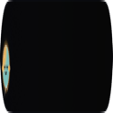
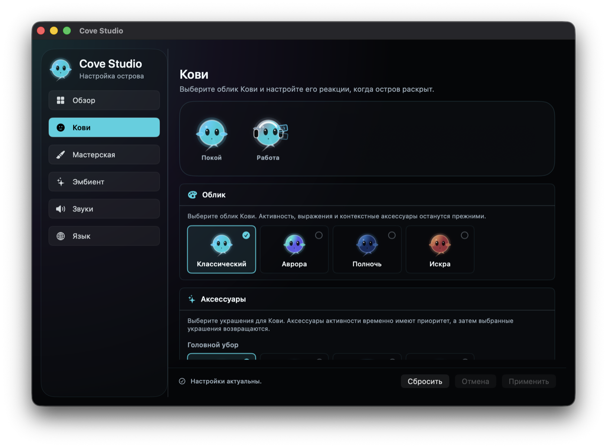
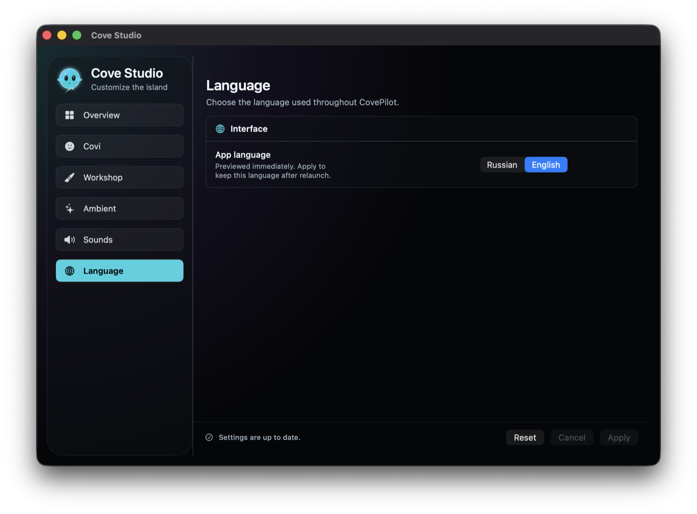
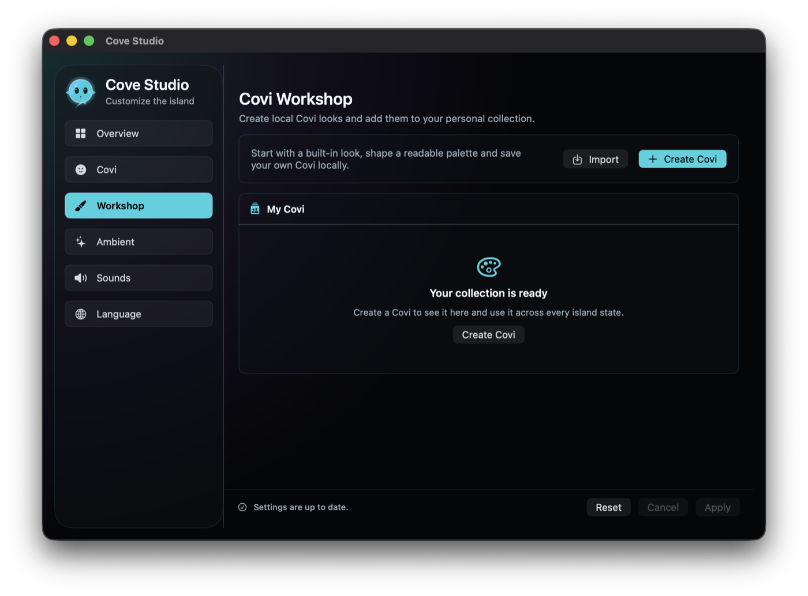

Кови и остров
В Cove Studio можно выбрать скин Кови, аксессуары, реакции на нажатие и слежение за курсором в раскрытом острове. Classic остаётся эталонным обликом; Aurora, Midnight и Ember включены.

CovePilotPublic Technical Preview · macOS
Кови живёт в compact notch-aware island и показывает Codex work, таймеры, Apple Music, погоду, время суток и аудиовыход без перегрузки menu bar.
Сборка подписана ad-hoc и не notarized. macOS потребует ручное подтверждение в Privacy & Security.
В Cove Studio можно выбрать скин Кови, аксессуары, реакции на нажатие и слежение за курсором в раскрытом острове. Classic остаётся эталонным обликом; Aurora, Midnight и Ember включены.
Codex lifecycle, таймеры, музыка, погода, время суток и аудиовыход отображаются компактными приоритетными реакциями.
Создавайте локальные облики Кови, импортируйте и экспортируйте `.coviskin`, храните custom definitions отдельно от настроек. `.coviskin` не может содержать код или remote URLs.
Нет product analytics, telemetry service или account system. Погода и optional online artwork lookup — единственные сетевые возможности preview.



Ожидаемый размер: 6088654 bytes
shasum -a 256 CovePilot-0.9.0-beta.2-macOS-arm64.dmg
6715b40ba6dce8738aad527781fbc9c86bb85d74a46f017be3c0c81a6f2f9d40